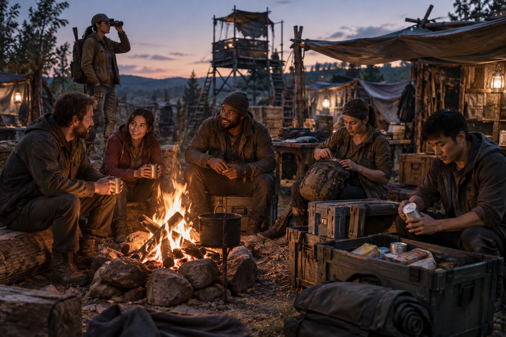
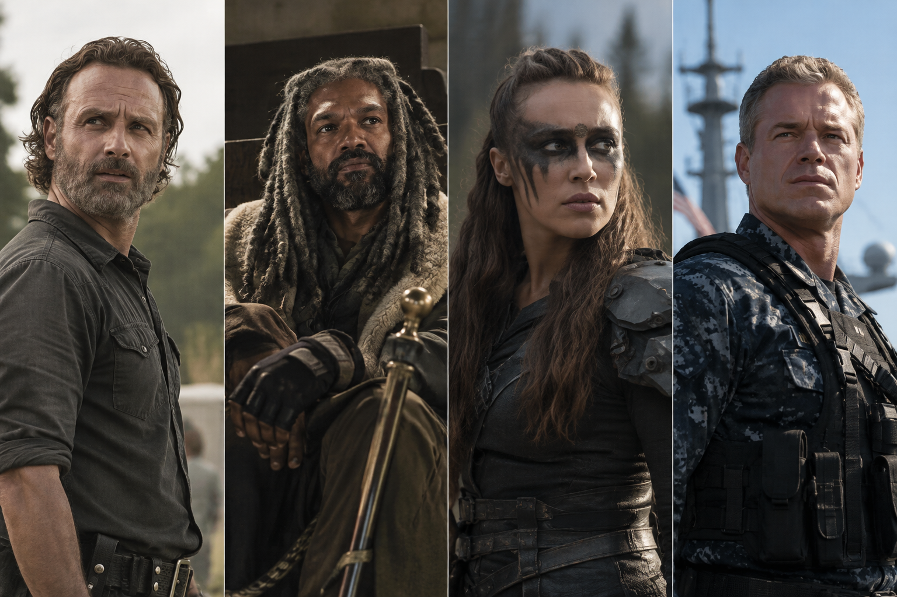
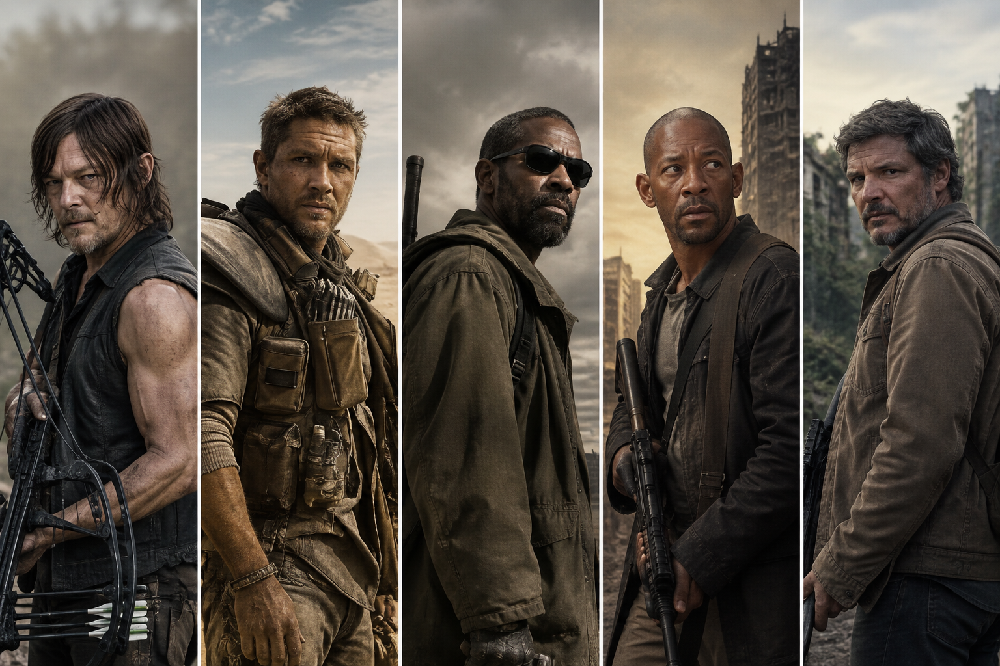
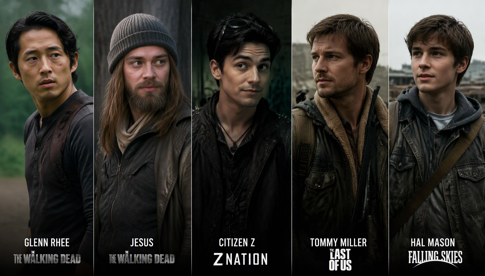
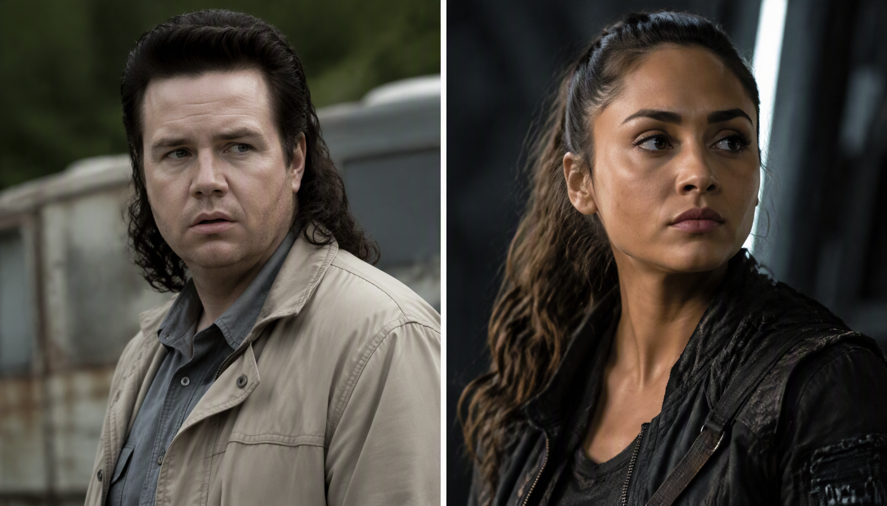
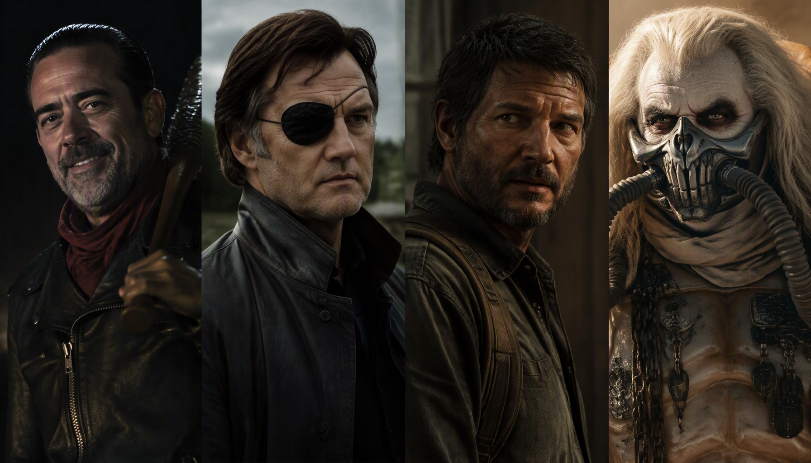
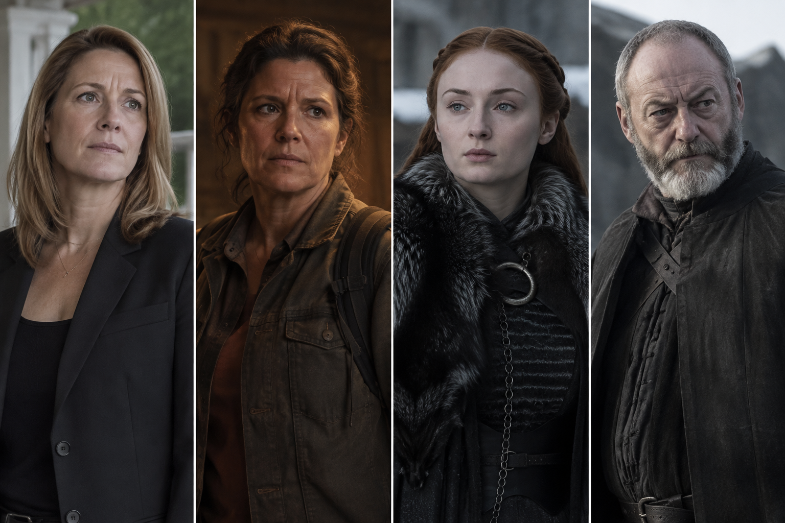
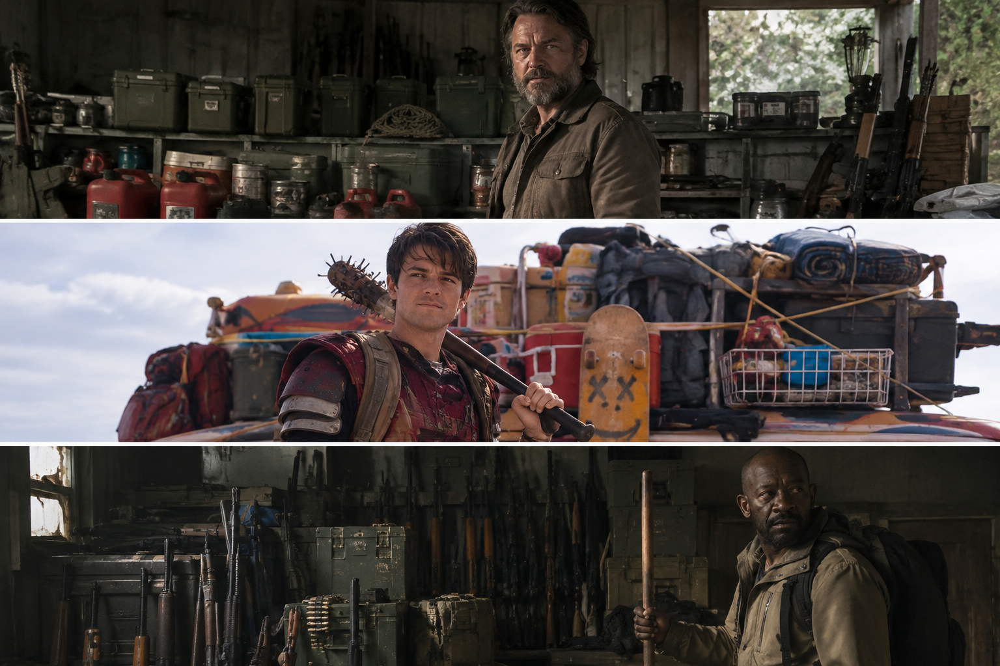

Types of People in an Apocalypse: Leaders, Lone Wolves, Opportunists and More
When everything falls apart, people do not all react the same way. Some take charge, some disappear into the woods, some keep a group alive by fixing things, and others quickly realize that fear gives them a chance to grab power. Zombie stories and other post-apocalyptic movies are full of these personalities: Rick Grimes trying to hold a group together, Daryl Dixon keeping people at a distance, Eugene Porter solving problems in his own unusual way, or Furiosa challenging a brutal ruler. They are memorable because no one survives on one trait alone.
Zombie stories often focus on the people swinging weapons or making dramatic speeches, but survival depends on a much wider cast. A group needs food producers, caregivers, negotiators, repairers, scouts, organizers, and people who can keep their heads when a plan goes wrong. It also needs to recognize the people who exploit everyone else.
These are patterns, not permanent boxes. The same person can be a leader at camp, a nervous follower in a firefight, and an opportunist when their family is threatened. Stress can bring out the worst in someone—or force them to develop abilities they never knew they had. Here are some of the types you might run into, and what each can bring to a group.

- The Leaders
- The Lone Wolves
- The Scouts and Observers
- The Fixers and Specialists
- The Fighters and Protectors
- The Warlords and Manipulators
- The Diplomats and Mediators
- The Opportunists and Traitors
- The Food Providers
- The Planners and Stockpilers
- The Healers and Caregivers
- The Community Builders
- The Traders and Networkers
- The Idealists and Pragmatists
- The Overwhelmed and Dependent
Why These Roles Matter
In the first chaotic days, boldness and quick decisions may matter most. Months later, the problems change: food must be replenished, buildings need repairs, illness spreads, equipment breaks, and people grow tired of living under constant pressure. Someone who was indispensable during the first escape might not be the person best suited to run a settlement.
That is why it is risky to judge a survivor by one trait. Strength helps, but so do patience, memory, emotional control, practical knowledge, and the ability to cooperate. The real question is not simply “Would this person survive?” It is “What happens when this person has responsibility, limited supplies, and other people depending on them?”
1. The Leaders

When everyone is frightened, tired, and arguing over the last can of food, someone has to make decisions. A good leader gives people direction without pretending to know everything. They listen, delegate, set priorities, and make difficult calls when there is no perfect answer. The best leaders understand that keeping people alive is not the same as keeping them obedient.
Leadership is more than shouting orders or being the toughest person in the room. A leader who can admit a mistake, share credit, and change course when new information arrives is far more useful than one who refuses to look weak. Poor leaders can become controlling or so attached to authority that they drag everyone into a bad decision.
Rick Grimes and King Ezekiel in The Walking Dead, Tom Mason in Falling Skies, Lexa in The 100, and Tom Chandler in The Last Ship show different approaches to leadership. From protecting a small group of survivors to commanding a resistance and uniting entire communities, each faces the difficult responsibility of keeping people alive in a collapsing world.
2. The Lone Wolves

Lone wolves prefer to depend on themselves. They may have learned that other people bring danger, arguments, or disappointment, so they travel light, keep plans private, and avoid getting attached. A capable loner can move quietly, make quick decisions, and leave a bad situation without waiting for a group to agree.
The trouble begins when survival becomes a long-term job rather than a string of short escapes. One person cannot stand watch, gather supplies, treat injuries, repair equipment, and sleep indefinitely without something being missed. Isolation also means there may be nobody to help when an injury or illness makes basic tasks impossible.
Daryl Dixon in The Walking Dead, Max Rockatansky in Mad Max, Eli in The Book of Eli, Robert Neville in I Am Legend, and Joel Miller in The Last of Us represent different kinds of lone-wolf survivors. Whether wandering through the wasteland, living in isolation or refusing to depend on others, they rely on their own skills and instincts to stay alive. Their stories also show that independence can become a weakness when trust and cooperation are needed.
3. The Scouts and Observers

These are the people who notice the open window, the second exit, the footprints in the mud, or the stranger watching from across the road. They scout routes, check buildings, watch the perimeter, track movement, and gather information before the group commits to a decision. They often spot trouble long before anyone else realizes it is there.
Their value is not simply being quiet or observant. It is knowing what information matters, checking whether a report is reliable, and returning before a small reconnaissance mission becomes a rescue operation. A reckless scout can get themselves trapped; an overconfident observer can mistake a rumor for a fact.
Glenn Rhee and Jesus in The Walking Dead, Citizen Z in Z Nation, Tommy Miller in The Last of Us, and Hal Mason in Falling Skies demonstrate different aspects of scouting and observation. From exploring dangerous territory and tracking threats to monitoring enemy activity and gathering intelligence, they help their groups stay one step ahead of danger.
4. The Fixers and Specialists

A broken radio, a dead generator, a leaking roof, or a vehicle that will not start can become a serious threat when there is nobody coming to fix it. Resourceful people look at what is available and work out what can be repaired, adapted, or salvaged. Mechanics, electricians, radio operators, carpenters, cooks, and water-system specialists can keep an entire settlement functioning.
These skills are easy to underestimate because they are not always dramatic. But a group may depend more on the person who keeps its water pump running than on another person carrying a weapon. The danger is relying on one specialist for everything. Important knowledge should be shared, documented, and taught to others wherever possible.
Eugene Porter in The Walking Dead and Raven Reyes in The 100 represent different kinds of technical problem-solvers. Bill in The Last of Us shows how practical knowledge, maintenance, and preparation can make a settlement much harder to destroy.
5. The Fighters and Protectors
Some people take on the dangerous jobs: guarding an entrance, escorting a supply run, standing between a threat and a vulnerable person, or responding when a situation turns violent. They may have combat experience, physical strength, courage, or simply the ability to stay functional when everyone else is frightened.
But being brave is not the same as being wise. A fighter who treats every disagreement as a challenge can waste ammunition, injure allies, and turn a small dispute into a feud. A group needs protectors who understand restraint, follow instructions, work well within a team, and know when avoiding a fight is the better form of protection.
Reliability is just as important as fighting ability. Good protectors understand the chain of command, follow agreed plans, respect their responsibilities, and earn the trust of the people leading them. Leaders need people they can depend on to hold a position, carry out difficult assignments, and protect others without constantly questioning every decision. At the same time, discipline should not mean blindly following unjust or dangerous orders.
Jerry and Abraham Ford in The Walking Dead and Indra in The 100 represent different kinds of fighters and protectors. Jerry is fiercely loyal to his people and trusted by King Ezekiel, Abraham brings military experience and battlefield discipline, while Indra combines years of warrior experience with loyalty to her commanders and people. They show why a capable community needs fighters who are not only brave, but dependable, disciplined and trustworthy.
6. The Warlords and Manipulators

Some people see a collapse as an opportunity to take power. Warlords build their position around force: they collect weapons, control access to food or water, demand loyalty, and present themselves as the only thing standing between their people and chaos. Others rule less openly, using fear, propaganda, secrets, or emotional manipulation to keep people dependent.
Not every dangerous person is loud or visibly violent. Someone who controls medicine, information, transport, or access to shelter can have enormous power without personally carrying a weapon. Fear may produce obedience for a while, but it also encourages lies, resentment, quiet resistance, and eventual betrayal.
Negan and the Governor in The Walking Dead, David in The Last of Us, and Immortan Joe in Mad Max: Fury Road show different forms of power built on intimidation, control, and exploitation.
7. The Diplomats and Mediators

Not every threat arrives with teeth or a weapon. Arguments over food, leadership, territory, or trust can split a group just as effectively. Diplomats calm tempers, negotiate agreements, settle disputes, and help people with different priorities find a way to cooperate. They can also make contact with neighboring settlements without turning every meeting into a confrontation.
They are especially valuable when two groups need each other but have good reasons to be suspicious. Still, diplomacy cannot fix every situation. A manipulator may use negotiations to stall, gather information, or identify weaknesses, so patience must be balanced with caution.
Deanna Monroe in The Walking Dead, Maria in The Last of Us, and Sansa Stark and Davos Seaworth in Game of Thrones show different sides of negotiation, alliance-building, and keeping a community together.
8. The Opportunists and Traitors
Opportunists adapt quickly. They switch plans when circumstances change, trade whatever is valuable, and look for the arrangement that gives them the best chance of making it through the next day. That flexibility is not automatically bad: rigid loyalty to a failing plan can get everyone killed.
The line is crossed when adaptation becomes betrayal. Some people pass information to rivals, sabotage plans, or pretend to be loyal while waiting for a better offer. Others change sides because they are frightened or trying to protect someone. Motives matter, but repeated dishonesty makes cooperation almost impossible.
Jadis in The Walking Dead shifts alliances as the balance of power changes, while Shane Walsh shows how fear, jealousy, and competing ideas about leadership can turn someone inside the group into a threat. The Ghoul in Fallout often approaches relationships as a calculation of risk and reward.
9. The Food Providers
Food does not appear just because a group has survived the first week. Farmers, gardeners, hunters, fishers, and foragers all help keep people fed once shops and supply chains are gone. Some know how to grow crops and preserve harvests; others understand animal signs, fishing grounds, seasonal plants, or how to find food beyond the nearest abandoned supermarket.
Neither farming nor hunting is a guaranteed solution. Crops need suitable soil, seeds, water, tools, time, and protection. Hunting takes energy and skill, catches are uncertain, and wild plants can be dangerous if misidentified. The most resilient settlements use several food sources rather than depending on one method.
Maggie Greene at Hilltop in The Walking Dead shows the importance of growing food, while Daryl Dixon and Katniss Everdeen represent tracking and hunting skills. Their abilities are different, but both contribute to the same basic need: a reliable food supply.
10. The Planners and Stockpilers

These survivors think beyond the next meal. They keep track of food, batteries, medicine, fuel, tools, spare parts, warm clothing, and the small items that become difficult to replace when normal supply chains stop. Good planners estimate how quickly supplies are being used, set priorities, and prepare for problems before they become emergencies.
Preparation becomes a problem when collecting matters more than using supplies wisely. Food can expire, batteries can corrode, and a hidden stockpile does not help anyone if nobody knows where it is. Hoarding can also create resentment when one person protects a private stash while the rest of the group goes without.
Bill in The Last of Us is a useful example of organized preparation: his supplies, tools, fences, and equipment all serve a purpose. The lesson is not to collect everything, but to store what is useful and manage it properly.
11. The Healers and Caregivers
A group needs people who can clean wounds, recognize when someone is getting worse, care for children and older people, and stop ordinary illness from becoming a camp-wide problem. Medical professionals are valuable, but so are people who can maintain hygiene, prepare food safely, provide basic first aid, and support someone who is frightened or grieving.
Medical knowledge has limits, especially when proper equipment and supplies are running low. A healer should not be expected to perform miracles or carry every emergency alone. Care work also takes time and energy, and the people doing it need rest and support rather than being treated as endlessly available.
Hershel Greene often becomes the person others turn to for treatment in The Walking Dead. Across The Last of Us, caregiving is also shown through the difficult choices people make to protect family members and vulnerable companions.
12. The Community Builders
Community builders turn a temporary camp into a place where people can actually live. They organize shared work, establish fair rules, arrange routines, maintain common spaces, and make sure that practical responsibilities do not fall on just a few people. They understand that a settlement needs more than walls: it needs cooperation and a reason for people to stay.
The challenge is keeping a community fair when resources are tight. Rules must apply to leaders as well as newcomers, people need a way to raise concerns, and responsibilities should be shared. A settlement that looks orderly from the outside can still fall apart if resentment is allowed to grow inside it.
Deanna’s Alexandria in The Walking Dead and Tommy and Maria’s Jackson in The Last of Us offer contrasting examples of survivors trying to build something more stable than a temporary refuge.
13. The Traders and Networkers
No settlement can produce everything it needs. Traders and networkers build relationships with nearby groups, exchange surplus supplies, pass along useful information, and find ways to obtain what their own community lacks. Their most valuable resource may not be the goods they carry, but the relationships they have built over time.
Trade also creates risks. A meeting can expose a location, a deal can be a trap, and a dishonest partner can spread false information. Good traders understand value without assuming every stranger is trustworthy. They also know that a reputation for fairness can be worth more than a single profitable exchange.
The trading posts and shifting alliances in Fallout show how much can depend on who knows whom, what each settlement can offer, and whether anyone trusts the deal.
14. The Idealists and Pragmatists
These are not jobs so much as two different ways of looking at survival. Idealists believe staying alive should not mean becoming cruel. They may argue for helping strangers, protecting prisoners, keeping promises, or refusing to abandon people who cannot contribute much. They remind a group what it is trying to preserve in the first place.
Pragmatists focus on what is most likely to work with the resources and time available. They may prioritize clean water over comfort, a safe retreat over a dramatic stand, or the survival of the group over a risky rescue. Their judgment can prevent sentimental decisions from putting everyone in danger, but pragmatism becomes dangerous when people are treated only as costs and benefits.
Dale and Morgan Jones in The Walking Dead represent different forms of holding on to a moral code, while Joel Miller in The Last of Us often makes hard decisions based on the survival of himself and the people he loves. A healthy group needs room for both compassion and realism—and people willing to challenge either when it goes too far.
15. The Overwhelmed and Dependent
Not everyone responds to danger with immediate action. Some people freeze, deny what is happening, panic, or make rushed decisions simply to escape uncertainty. Others are not especially skilled on their own but become dependable members of a group when they have clear routines and a useful role. These people are easy to dismiss, especially in stories that celebrate the fearless survivor, but they are part of almost every real community.
Fear is not always a permanent personality trait. Practice, simple instructions, rest, reassurance, and a calm teammate can help someone function better under pressure. A group should not confuse inexperience with uselessness, but it should also avoid making one person completely dependent on a single leader or caregiver.
The early part of 28 Days Later captures how disorienting a sudden collapse can be for an ordinary person. Many characters across apocalypse stories also change dramatically: frightened newcomers become capable contributors, while confident survivors can deteriorate under prolonged stress. People are not fixed types, and the way a group treats them can influence who they become.
Most People Are a Mix of Several Types
Real people do not fit into neat boxes. A good leader might also be a skilled negotiator. A lone wolf may be an excellent mechanic who joins a group because it is the sensible choice. A soldier who follows orders in one situation may become the first person to question a reckless plan in another. Even a ruthless opportunist might genuinely care about one or two people.
It is also possible for a person's role to change. Someone who starts out frightened may become a dependable lookout after practice. A confident fighter may learn that a settlement needs their help in the workshop more than it needs another patrol. And someone who once kept the group together can become dangerous if they begin to value control more than the people they lead.
The best way to understand people is to watch what they repeatedly do when the pressure is on. Do they share useful information? Do they admit mistakes? Do they protect the vulnerable when it costs them something? Can they be trusted with a job when nobody is watching? One dramatic moment can be misleading; patterns over time tell you much more.
What Makes a Survival Group Actually Work?
A group does not need perfect people. It needs people whose strengths complement one another, a way to resolve disagreements, and enough flexibility to change plans when circumstances change. The scout should be able to warn the leader. The mechanic should be able to tell the group when a vehicle cannot be fixed. The caregiver should be able to say when someone needs rest. And people in charge should be willing to hear all of it.
Clear roles reduce confusion, but roles should not become rigid hierarchies that stop people from helping outside their specialty. A farmer may need to stand watch sometimes, and a strong fighter may need to help carry water or repair a roof. Cross-training also matters: if only one person knows how to run the radio, treat a wound, or repair the water pump, the entire group is one bad accident away from trouble.
Most of all, trust has to be earned and maintained. Blind trust can be exploited, but constant suspicion burns time and turns ordinary mistakes into crises. The healthiest groups set boundaries, check important claims, distribute responsibility, and deal with problems before resentment becomes a split.
In the End, Survival Is About More Than Strength
Apocalypse stories are full of memorable personalities because every crisis pushes people toward choices they might never face in ordinary life. Some become leaders, some become protectors, and some use the collapse as an excuse to take whatever they want. Others quietly plant crops, repair tools, care for the sick, or keep track of the things everyone else overlooks.
The most interesting survivors are rarely just one thing. They can be brave and stubborn, clever and selfish, generous and afraid. A strong group learns how to use people's strengths without pretending their weaknesses do not exist—and knows when a useful person is starting to become a danger.
After all, zombies may be the obvious threat outside the fence. What happens between the people inside it can decide whether the group lasts.
Characters from apocalypse stories can help us spot these patterns, but no one fits perfectly into a label. People react differently when the pressure rises, and the same person can change as the people around them and the situation change.
Suggested Quizzes
Ready for another challenge? Try one of these apocalypse and survival quizzes.